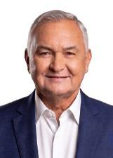

Rio Grande do Norte
Quem ocupa os cargos hoje e quem assume em 2027.
Resultado provisórioTSE, capturado em 29/10/2026
Poder Executivo
Administra o governo e executa as leis: saúde, educação, segurança, estradas e o orçamento.
Governador
 Fatima BezerraPT · 1.066.496 votos · eleito em 2022✓ Reeleito›
Fatima BezerraPT · 1.066.496 votos · eleito em 2022✓ Reeleito›
Quem comanda cada cidade do estado.
Poder Legislativo
Cria as leis, aprova o orçamento e fiscaliza o Executivo.
Senadores (3)
Capitão StyvensonREDE · 745.827 votos★ Novato no Senado›DR. Zenaide MaiaPHS · 660.315 votos · eleito em 2018★ Novato no Senado›Rogério MarinhoPL · 708.351 votos · eleito em 2022★ Novato no Senado›Deputados federais (8)
Bancada federal por partido
8 cadeiras de Rio Grande do Norte
- PL450%
- PT225%
- UNIÃO225%
Do partido com mais cadeiras para o com menos, não por posição política. Cada partido usa a sua cor de marca.
Deputados federais (8): buscar e ver a lista

General GirãoPL · 76.698 votos✓ Reeleito›João MaiaPL · 104.254 votos✓ Reeleito›MineiroPT · 83.481 votos · eleito em 2022★ Novato na Câmara›Natália BonavidesPT · 157.565 votos✓ Reeleito›Robinson FariaPL · 97.319 votos · eleito em 2022★ Novato na Câmara›Sargento GonçalvesPL · 56.315 votos★ Novato na Câmara›Deputados estaduais e distritais (24)
Assembleia por partido
24 cadeiras de Rio Grande do Norte
- PSDB1042%
- PL312%
- PT312%
- PV312%
- SOLIDARIEDADE28%
- UNIÃO28%
- MDB14%
Do partido com mais cadeiras para o com menos, não por posição política. Cada partido usa a sua cor de marca.
Deputados estaduais e distritais (24): buscar e ver a lista
Os eleitos de cada cidade do estado.
Poder Judiciário
Julga os conflitos e garante que as leis sigam a Constituição.
Os desembargadores do Tribunal de Justiça e do Tribunal Regional Eleitoral. Não são eleitos.
Poder Executivo
Administra o governo e executa as leis: saúde, educação, segurança, estradas e o orçamento.
Governador
Cadu de LulaPT · 1.073.024 votos★ Novato›Quem comanda cada cidade do estado.
Poder Legislativo
Cria as leis, aprova o orçamento e fiscaliza o Executivo.
Senadores (3)
Rogério MarinhoPL · 708.351 votos · eleito em 2022★ Novato no Senado›Samanda de LulaPT · 635.924 votos★ Novato no Senado›Styvenson ValentimPODE · 1.055.000 votos✓ Reeleito›Deputados federais (8)
Bancada federal por partido
8 cadeiras de Rio Grande do Norte
- PL338%
- PV225%
- PP112%
- PT112%
- UNIÃO112%
Do partido com mais cadeiras para o com menos, não por posição política. Cada partido usa a sua cor de marca.
Deputados federais (8): buscar e ver a lista
Deputados estaduais e distritais (24)
Assembleia por partido
24 cadeiras de Rio Grande do Norte
- PL729%
- PP417%
- PT417%
- PSDB312%
- PV312%
- UNIÃO28%
- MDB14%
Do partido com mais cadeiras para o com menos, não por posição política. Cada partido usa a sua cor de marca.
Deputados estaduais e distritais (24): buscar e ver a lista
Os eleitos de cada cidade do estado.
Poder Judiciário
Julga os conflitos e garante que as leis sigam a Constituição.
Os desembargadores do Tribunal de Justiça e do Tribunal Regional Eleitoral. Não são eleitos.
Como ler
★ Novato Primeiro mandato nesta casa (Câmara ou Senado).
✓ Reeleito Já estava no cargo e foi eleito de novo.
↺ Retorno Já teve mandato, mas estava fora.
Sem selo Não conseguimos ligar a pessoa a um mandato anterior. Isso não quer dizer que seja novata: simplesmente não afirmamos nada.
Provisório Só é confirmado na diplomação.